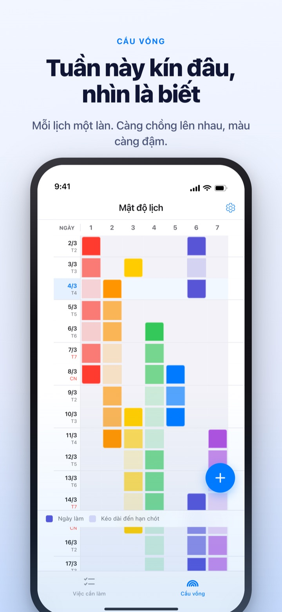
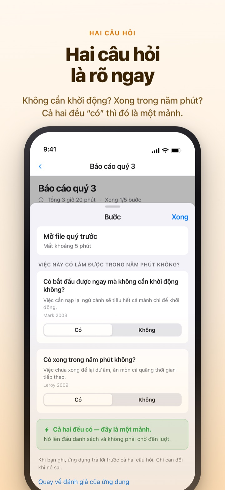
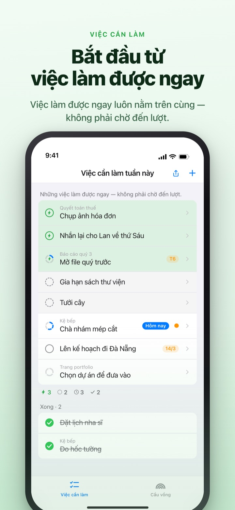
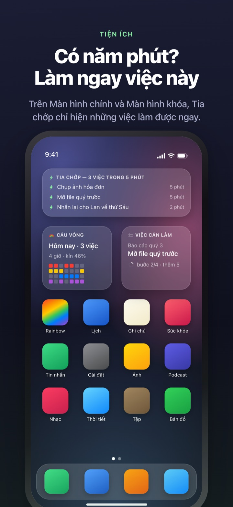

Thấy trước tuần kín lịch,
không để 5 phút trôi mất
Việc càng chồng lên nhau, cầu vồng càng đậm. Chia việc lớn thành từng bước, khi có khoảng trống thì bước làm được ngay đã chờ sẵn trên cùng.
Cầu vồng, chia nhỏ việc, bộ hẹn giờ và đồng bộ với Mac đều miễn phí.

Tự tay phân loại thử
"Báo cáo quý 3" đã được chia thành năm bước. Chọn một bước rồi thử đổi thời gian hoặc lật câu trả lời của hai câu hỏi. Chỉ bước nào được trả lời "Có" cả hai mới là mảnh, thứ bạn nhặt lên làm trong 5 phút.
Có tuần nào lịch trông trống mà vẫn thấy hụt hơi?
Lịch chỉ cho biết có việc hay không, không cho biết việc chồng lên nhau bao nhiêu lớp. Ba hạn chót dồn vào cùng một tuần, thường phải bước vào tuần đó mới nhận ra. Còn 5 phút rảnh ở giữa thì trôi qua trong lúc lướt danh sách việc cần làm. Rainbow of Desire vẽ một tuần thành ô lưới, tô đậm theo mức chồng việc và tách riêng những bước làm được trong khoảng trống.
Hai câu hỏi là đủ phân loại
Khi chia việc lớn thành từng bước, mỗi bước được hỏi hai điều. Có bắt đầu ngay được mà không cần khởi động không? Có làm xong trọn vẹn trong năm phút không?
Chỉ bước nào được trả lời có cả hai mới là mảnh. Ứng dụng trả lời trước dựa trên thời gian và chữ bạn viết, bạn chỉ lật lại khi nó sai.

Có khoảng trống thì chỉ cần nhìn trên cùng
Vuốt việc cần làm sang phải để gắn tia chớp, nó sẽ vượt lên đứng trên cùng. Không cần đọc hết danh sách, thứ làm được ngay đã nằm ở đó.
Các bước có chờ nhau hay không, mỗi nhóm chỉ quyết một lần. Theo thứ tự thì bước đầu tiên chưa xong lên trước, tùy ý thì mảnh nào nhặt được ngay lên trước.

Không mở ứng dụng vẫn thấy
Bộ hẹn giờ đếm đến đúng lúc sự kiện kết thúc, thời gian còn lại hiện cả trên Dynamic Island và Màn hình khóa.
Tiện ích Màn hình chính và Màn hình khóa hiện việc đang làm, thứ làm được trong 5 phút và cầu vồng của tuần này. (Tiện ích thuộc Pro)

Bắt đầu trong ba bước
- 1
Kẻ lịch
Chạm và giữ ô trống ở ngày bắt đầu, chạm thêm ngày kết thúc, một đường sẽ hiện trên cầu vồng.
- 2
Chia việc lớn
Chạm vào việc cần làm, ghi các bước và chọn thời gian. Ứng dụng tự trả lời trước hai câu hỏi.
- 3
Rảnh thì nhìn trên cùng
Các mảnh và việc gắn tia chớp gom lên trên cùng, không phải chờ lượt.
Những từ bạn sẽ gặp trên màn hình
- Ô đậm · ô nhạt
- ngày thật sự bắt tay vào làm, và phần còn lại cho tới ngày kết thúc
- Cả hàng kín ô
- ngày phải xoay nhiều việc cùng lúc, một việc trễ là cả ngày trễ theo
- Mảnh
- có cho cả hai câu hỏi; bước nhặt lên làm khi có 5 phút
- Quãng ngắn
- không cần khởi động nhưng không xong trong một mảnh; ngồi xuống làm một lèo
- Quãng
- cần khởi động hoặc từ 45 phút trở lên; đặt vào thời gian đã giữ riêng
- Tia chớp
- dấu "làm ngay" do bạn tự gắn, vượt lên trên cùng
- Theo thứ tự · Tùy ý
- các bước có chờ nhau không, quyết một lần cho mỗi nhóm
- Sổ thời gian
- bảng tổng kết tuần: việc còn lại, thời gian lấy lại và lúc nghỉ ngơi, ghi riêng không cộng dồn
Thời gian cộng dồn từ dưới lên: thời gian của việc lớn là tổng thời gian các bước.
Những gì cần để sống trọn hôm nay đều miễn phí
Miễn phí
- Cầu vồng (lưới mật độ lịch)
- Chia việc thành bước và hai câu hỏi
- Tia chớp, thứ tự các bước
- Bộ hẹn giờ (Dynamic Island · Màn hình khóa)
- Đồng bộ với ứng dụng Rainbow Craft trên Mac qua iCloud
- Sổ thời gian của 2 tuần gần nhất
Rainbow Plus · Rainbow Pro
- Plus: thống kê sự kiện, Sổ thời gian xa hơn 2 tuần
- Pro: toàn bộ Plus cùng tiện ích Màn hình chính và Màn hình khóa
- Pro: nhập từ Lịch và hiển thị liên tục
- Pro: chia sẻ lịch (chỉ xem)
- Pro: mở luôn Rainbow Craft Pro trên Mac
Mỗi gói có thể mua theo năm hoặc trả một lần dùng trọn đời
Chỉ thu phí phần nhìn lại các tuần đã qua và phần đưa dữ liệu ra ngoài ứng dụng. Ai đã mua Pro trước đây hoặc đang dùng gói tháng thì hiện vẫn là Pro.
Câu hỏi thường gặp
Có cần tài khoản hay đăng nhập iCloud không?
Dùng một mình thì không. Không cần đăng ký, mọi thứ lưu trong máy. Muốn đồng bộ với thiết bị khác hoặc ứng dụng trên Mac, hay dùng tính năng chia sẻ thì cần đăng nhập iCloud.
Ứng dụng trả lời sai hai câu hỏi.
Chạm vào bước rồi đổi giữa Có và Không. Câu trả lời bạn tự chọn luôn được ưu tiên hơn đánh giá của ứng dụng. Muốn giao lại cho ứng dụng thì chạm Quay về đánh giá của ứng dụng. Bước chưa có thời gian sẽ không được tính là mảnh, vì ứng dụng chưa biết nó có xong trong 5 phút không.
Có xem chung với người khác được không?
Bạn có thể gửi liên kết mời để chia sẻ lịch ở chế độ chỉ xem (Pro), hoặc mở một danh sách việc cần làm mà bạn và người được mời cùng đọc, cùng sửa. Ai có liên kết cũng tham gia được, nên chỉ gửi cho người sẽ dùng chung. Tính năng này không liên quan đến Chia sẻ trong gia đình của Apple.
Sự kiện trong ứng dụng Lịch có hiện không?
Sự kiện từ những lịch bạn chọn sẽ hiện trên cầu vồng và màn hình theo ngày (Pro). Ứng dụng chỉ đọc, không ghi gì vào Lịch.
Có đánh dấu xong từ tiện ích được không?
Tiện ích chỉ để xem. Chạm vào sẽ mở thẳng màn hình việc cần làm, bạn đánh dấu trong ứng dụng nhé.
Ứng dụng trên Mac có phải mua riêng không?
Rainbow Craft là một ứng dụng macOS riêng trên Mac App Store. Cùng tài khoản iCloud thì việc cần làm và kế hoạch tuần tự đồng bộ, việc đồng bộ không mất phí.
Việc cần làm ghi từ trước còn nguyên không?
Còn nguyên. Việc cần làm, các bước và thời gian đã đặt đều được giữ. Nhãn điều kiện bắt đầu cũ sẽ được ứng dụng đánh giá lại bằng hai câu hỏi.
Nội dung tôi ghi được lưu ở đâu?
Không có máy chủ. Dữ liệu chỉ nằm trên máy và iCloud riêng của bạn, nhà phát triển không xem được. Không dùng mã định danh quảng cáo hay vị trí, chỉ gửi thống kê sử dụng ẩn danh không nhận ra bạn, có thể tắt trong Cài đặt.
Hủy gói đăng ký thế nào?
Vào ứng dụng Cài đặt > Tài khoản Apple > Đăng ký. Nếu không hủy ít nhất 24 giờ trước khi hết kỳ, gói sẽ tự gia hạn với giá cũ. Gói trọn đời chỉ thanh toán một lần.
Gặp khó khăn hay thấy điều gì lạ, hãy viết cho leeo@kakao.com. Trong Cài đặt của ứng dụng cũng có mục liên hệ.